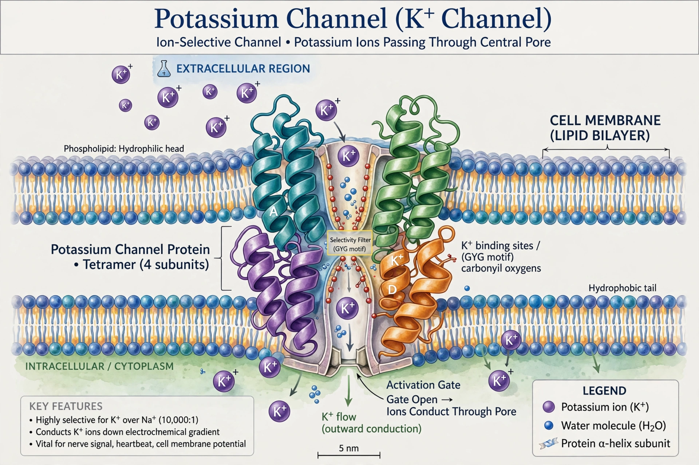

Potassium channels are the most widely distributed type of ion channel found in virtually all organisms. They form potassium-selective pores that span cell membranes. Potassium channels are found in most cell types and control a wide variety of cell functions, including setting resting membrane potential and shaping action potentials.
Voltage-gated (Kv), calcium-activated (KCa), inward-rectifying (Kir), and two-pore domain (K2P) channels, classified by gating and structure (6TM, 2TM, 4TM).
Tetramers with a selectivity filter bearing the TVGYG signature sequence that selects K+ over Na+ with high fidelity despite similar ionic radii, explained by Roderick MacKinnon's crystallography (Nobel Prize 2003).
Blocked by tetraethylammonium, barium, and toxins such as dendrotoxin; opened or blocked by drugs treating arrhythmia, epilepsy, and diabetes (sulfonylureas target KATP).
See also: Ion channel, Action potential